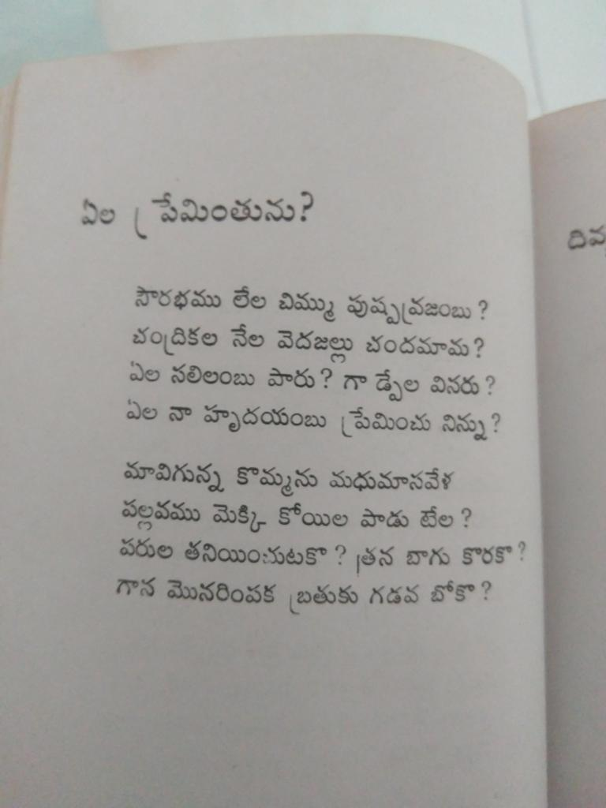

ఖమ్మం, కృష్ణశాస్త్రీ, కవిత్వం వగైరా కబుర్లు

పోయిన గురువారం కవిసంగమం ఫేసుబుక్ గ్రూపులో అఫ్సర్ గారి అద్భుతమైన ‘ఎంట్రీ’ చదివి ఉత్తేజిత స్థితినుంచి కిందకి రాకముందే, వారు ఈ కామెంట్ పెట్టారు:
“కవిమిత్రులకు: ఎన్నో కవితలు రాసినా, మీ తొలి కవిత అనుభవమూ ఎప్పటికీ కొత్త ముచ్చటే! ఆ ముచ్చట గురించి క్లుప్తంగా చెప్తారా? అప్పుడు ఈ రైటప్ కి వొక ఫలితం వుంటుంది. మీ అనుభవ ఆవిష్కరణ కోసం యెదురు చూస్తూ..”
హనుమంతుడు పిలిచి భుజంతట్టి “కుప్పిగంతులేసేయ్, నీకెందుకు నేనున్నా” అన్నంత ధైర్యం వచ్చింది. ఆ ధైర్యంతోనే, ఎన్నో కవితలు రాయకపోయినా, నేను కవినని అనుకోకపోయినా, ఇది “రాసిన” అనుభవం కాకపోయినా, ఇవిగో నా కుప్పిగంతులు.
*****
అనగనగా ఆ రోజుల్లో మా బాబాయి వాళ్ళు – అంటే బాబాయి, పిన్ని, చెల్లెలు, తమ్ముడు – ఖమ్మం లో ఉండేవాళ్ళు. మొదటిసారి ఒక్కణ్ణి వాళ్ళ ఇంటికి వెళ్ళినప్పుడు నేను తొమ్మిదో తరగతిలో ఉన్నట్టు గుర్తు. మా పిన్నికొక అన్నయ్య. కాబట్టి నాకు మామయ్య. ఆయనకొక కూతురు, ఒక కొడుకు. మా చెల్లి, ఆ కూతురూ నాకన్నా ఒక రెండేళ్లు చిన్న; ఒకే తరగతి, ఒకే బడి. వాళ్ళ ఇల్లు ఒక నాలుగు నిముషాల నడక దూరం. అందరం కలిసి ఆ వయసు పిల్లలు వేసే వేషాలు వేస్తుండేవాళ్ళం.
ఎండాకాలం సెలవల్లో రెండు మూడు సంవత్సరాలు వెళ్లొచ్చాను. ఇప్పుడు చెప్పదలుచుకున్న కథాకాలానికి నాదప్పుడే ఇంటర్ అయిపోయింది. చాలా సెలవులు, ఖమ్మం వెళ్ళాను. వెళ్లిన రోజే మా చెల్లి కోసం ఆ మామయ్య కూతురు ఇంటికొచ్చింది. చూద్దును కదా అమ్మాయి కాస్తా అందగత్తె అయిపోయుంది. అసలా అమ్మాయిని ‘అందగత్తె’ అని ఊరుకోవడం చాలా కష్టం – ఆ తాలూకూ కవిత్వం గట్రా తర్వాత ప్రవేశపెడతాను. ప్రస్తుతానికి ముందుకెళదాం.
బాగానే మాట్లాడింది, నవ్వింది, వగైరా, కానీ ఇదివరకట్లాగ రోజూ వచ్చి గంటలు గంటలు కూర్చునేట్లు లేదు. మా చెల్లి కూడా కొంచెం నన్ను దూరంగా ఉంచుతున్నట్లే కనబడింది. తమ్ముళ్ళిద్దరూ అప్పటికి చిన్న కుంకలు. మనకేమో అప్పుడప్పుడే కవిత్వమూ కాకరకాయలూ రుచి తెలుస్తున్న రోజులు.
తర్వాత రోజు మామూలుగానే తెల్లారింది. మధ్యాన్నమంతా కూర్చుని నెమరు వేసింతర్వాత ఈ విషయంలో మనమే ఏదోకటి చెయ్యాలని తోచింది. అప్పటి వరకు నన్ను నేను పిల్లాడిగానే అనుకోవటం వల్ల ఎప్పుడూ ఎవరింటికైనా బంధువుల ఇంటికి, నా అంతట నేనెళ్లి – “ఆ, ఇవ్వాళే వచ్చానండీ, అంతా బాగున్నారండీ” వగైరా పలకరింపులు పెట్టుకునేవాణ్ణి కాదు. ఈసారి మాత్రం మామయ్య వాళ్ళింటికెళ్లి పలకరించి రావాల్సిందే అనుకున్నాను. సరే సాయంత్రం మా చెల్లెలు వచ్చింతర్వాత ‘నాతో వస్తావా వాళ్ళింటికి’ అంటే, ‘అహ, నేను రా’నంది. సరే ‘నీ పని తర్వాత చెప్తాను’ అనుకుని, ఒక్కణ్ణే బయల్దేరాను.
మామయ్య ’పొమ్మంటే బాగుండద’న్నట్టు ఇంట్లోకి రానిచ్చారేమో అనిపించింది. మా అత్తయ్య పలకరించి టీ ఇచ్చారు. వాళ్ళ అందగత్తె ఒక నవ్వు పడేసి వెళ్ళిపోయింది. ఒక పది నిమిషాల్లో అంతా నిశ్శబ్దం. ఇంక బయల్దేరాలి. మళ్లీ వచ్చే అవకాశం కోసం చుట్టూ చూస్తుండగా…అయిదారు పుస్తకాలుగా, మామయ్య వాళ్ళింట్లోకి మెట్లుగా కృష్ణశాస్త్రి కవితలు కనిపించాయి.
’చదివిస్తా’నని నేనడగడమూ, వీడికి అవసరమా అని సందేహమున్నా అప్పటికి నాకు చదువరిగా పేరుండడం వల్ల ’సరే తీసుకొ’మ్మని వారనడమూ, పుస్తకం దొరకబుచ్చుకొని నేను బయటికురకటమూ క్షణాల్లో జరిగిపోయాయి.
ఆ విధంగా, ఖమ్మంలో, పక్కన కొబ్బరి చెట్లూ, ఖాళీ స్థలమూ ఉన్న ఇంట్లో, అప్పుడప్పుడు కళ్ళముందూ, నిత్యమూ మనసులోనూ ఒక సుకుమారి సౌందర్యం వెల్లివిరుస్తుండగా, పదిహేడేళ్ల వయసులో తీరి కూర్చుని కృష్ణశాస్త్రి కవిత్వం చదువుకునే భాగ్యం కలిగింది.
ఆ ఊపులో కొన్నాళ్ళు కపిత్వం వెలిగించినప్పటికీ, ఆ తర్వాత, ఆ మామయ్యగారింట్లో వేరే కవితల పుస్తకాలు లేకపోవడం, నేను ఇంజనీరింకటం, మా ఇంట్లో విజయ విలాసం తర్వాతి కాలపు రచనలు కనబడకపోవటం వంటి రకరకాల కారణాల వల్ల తెలుగులో కవిత్వం చదవకుండానే అయిపోయింది. కాలేజీలో మిత్రుడొకడు తప్ప కవితావ్యాసంగం ఉన్నవాళ్ళెవరూ లేకపోయారు. దాంతో అప్పుడప్పుడు, అనుకోకుండా కనపడ్డప్పుడు తప్ప, ప్రణాళికాబద్ధంగా కవిత్వం చదవడమో, కవిత్వం కనబడుతూ వినబడుతూ ఉండడమో జరగలేదు.
తర్వాత ఇన్నాళ్ళకి ఫేస్బుక్కులో కవిసంగమం పేజీ కనబడగానే ఎందుకో జాయినయ్యాను. రోజూ ఎన్నో కవితలు కనబడుతున్నాయి, కొన్ని కళ్ళుమూసుకుంటే వినబడుతున్నాయి, ఇంకొన్ని బస్సులో పక్క సీట్లో కూర్చుని నాతో వస్తున్నాయి. ఇంతకు మించి, కవిత్వం గురించి గొప్ప కవులు, విమర్శకుల అభిప్రాయాలు, ఆలోచనలు, ప్రశ్నలు నేరుగా చదవగలుగుతున్నాను. ఎంతో సంతోషం.
ఒక రెండురోజులు కవిత్వంలో మునిగి తేలాక ‘ఇంతకీ ఇంత గొప్ప పని చేస్తున్నవారెవరు? వారెట్టివారు? ఎక్కడివారు?’ అని కొంచెం వెదికితే, ముఖ్యులందరూ ఖమ్మం వాళ్లే. వారందరూ ‘అబ్బే లేదండీ ఇంకా చాలామంది ఉన్నారు’ అని నిజమే చెప్పవచ్చుగాక, ఇది పూర్తిగా కాకతాళీయం అయితే కావచ్చుగాక, నేను మాత్రం ఖమ్మానికీి, కవిత్వానికీ, నాకూ ఏదో ముడిపడి ఉందనుకుని సంతోషపడదామనుకుంటున్నాను